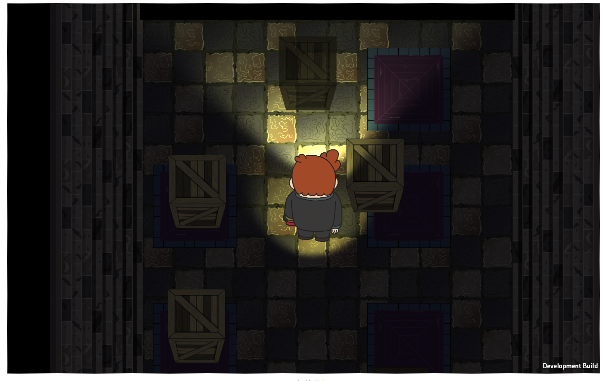
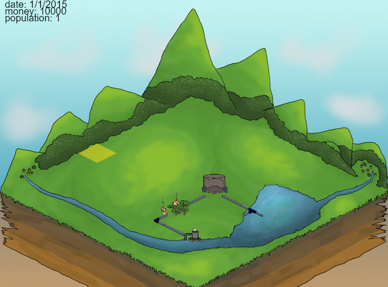
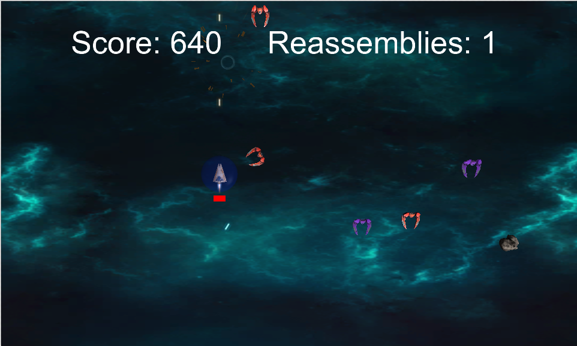
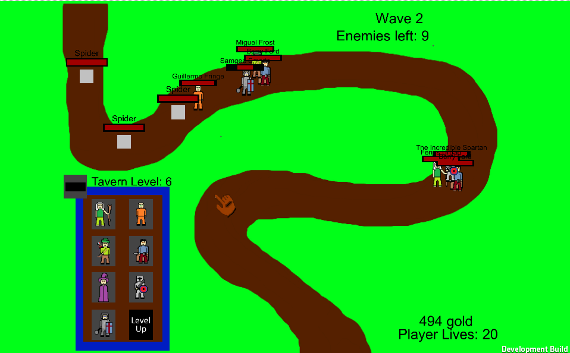

Projects
I like to stay busy. Right now I have three games that I consider in-progress (to varying degrees) and they are Katabasis, Water Works, and Schmup. MarioBird is a mini-game I wrote for Plow Games. TDD is the first game I really tried to make. Of course there are other projects I could showcase but I don't believe these are good enough examples of my work.
I also branched out into Web Development and Design to supplement my income . In addition to writing this website I also created and currently manage the website for the office of Neuropsychology Associates in Indianapolis, Indiana. I used Worpress and custom PHP, HTML, and CSS to create this website.
Games

1)
Katabasis is a top-down adventure game similar to the Legend of Zelda or Binding of Isaac but with an emphasis on puzzle solving and the dichotomy of light and dark. You play as a boy who's lost in this strange dungeon. At first he's scared when the lights go out but the lantern he finds gives him the courage to descend further, perhaps to an exit. I'm working with six others to finish this game. We have two programmers (counting myself), two musicians, and one artist but everyone is involved in design. This has created a strongly collaboritive environment where opinions are expressed freely and game design is more democratic.
This is so very close to being finished after more than 1 and 1/2 years in development. I plan on putting up the first public build around 1/13/16. After this I will keep track of (if any) user criticism and try to polish what I can.
This is a Unity3D game so in order to play it in-browser please open the link in Firefox....or Internet Explorer if that's your thing.
Katabasis

2)
Water Works is a project from Indiana University's School of Public and Environmental Affairs. I was hired on after the previous developer left so I could help finish it. It is an isometric city builder except the focus is entirely on developing a working water system. The player is able to lay pipes, watertowers, residential areas, treatment plants and more to create a thriving community. Truly the focus of the project is to see if games can influence people's understanding of a topic and if they adjust their behavior accordingly. Obviously our topic is modern water systems so we hope that by playing our game people will understand how important this topic is and will adjust their behavior to create a positive change in water usage.
This project received some attention from the school newspaper
This is a rather large project and it probably won't be finished before I graduate but I plan on helping as much as I can for as long as I can.
Water Works

3)
This is called Schmup which is a play on "Shoot'em up". It is a top down vertical space shooter in the vein of Galaxian though as an infinite runner. As a scout returning from a ranging you are ambushed by the Schmup Empire. You can score points but you probably won't make it home. This game is unique to me because it is something I plan to work on and add to over time. New features in mind are a complete scoring system, boss fights, new weapons, and more intelligent enemy behaviors.
This is a Unity3D game so in order to play it in-browser please open the link in Firefox....or Internet Explorer if that's your thing.
Schmup

4)
This is what I dubbed MarioBird. This is the prototype I handed to my boss at Plow when he asked for a Flappy Bird-like game. He's a big Nintendo fan so all of the sounds and sprites are from Super Mario World. Again I did not create and do not own any of the sprites, sounds, or music nor did Plow endorse my use of them. My Boss used this foundation to implement the Flippy Football mini-game in Endless Blitz
This is a Unity3D game so in order to play it in-browser please open the link in Firefox....or Internet Explorer if that's your thing.
Mario Bird

TDD is a mash-up of Tower Defense and Dungeons and Dragons fantasy. The player places automaton heroes on the path to stop creeps from making it to the village and destroying it. There are 8 heroes based on traditional fantasy "Classes" each with unique skills and stats. This was a solo project I started early on to learn unity, design, and game programming. There is no art for enemies, the background is still a mockup, there is no balancing yet, the characters have incomplete ability sets, and there is atleast one UI bug. I've been told not to include incomplete/ugly projects like this but I learned so much from this I felt obliged to include it.
I really liked this concept but the design work was far too ambitious for my skill at the time. However having started it I learned alot about design and it gave me a good excuse to really push my coding skills (just the script for all of the heroes is over 2000 lines). It taught me how to best manage having Update and FixedUpdate in Unity. Not only that but in a game like this UI is very important thus it was really my first exposure tos UI design and coding. Unfortunately I haven't worked up the courage to fix all of the present bugs and get it to a better state of running but I'm still proud of this since it was really the first game I tried to create.
This is a Unity3D game so in order to play it in-browser please open the link in Firefox....or Internet Explorer if that's your thing.
TDD
is Strictly a Prototype